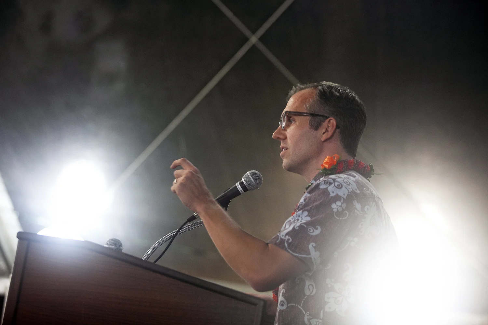
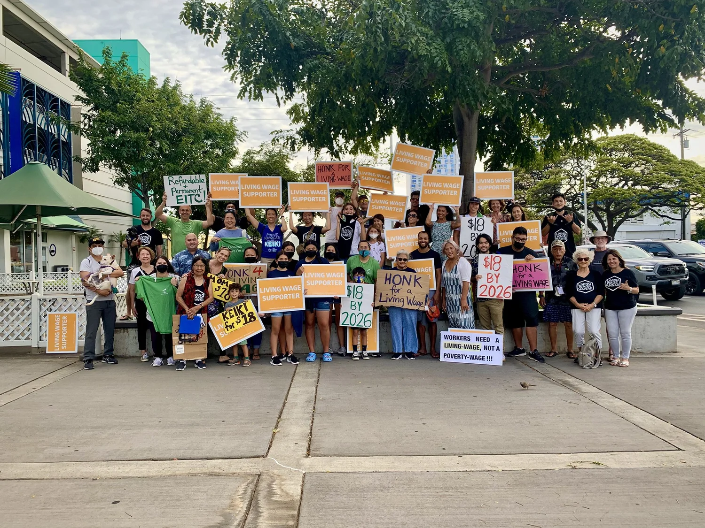
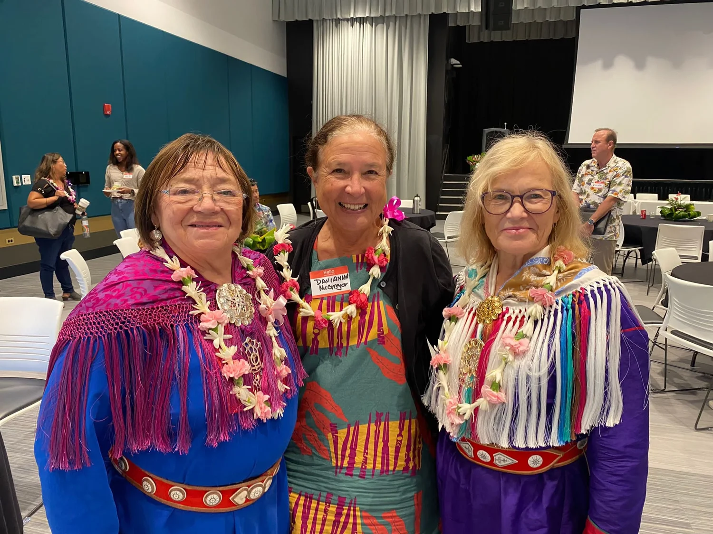
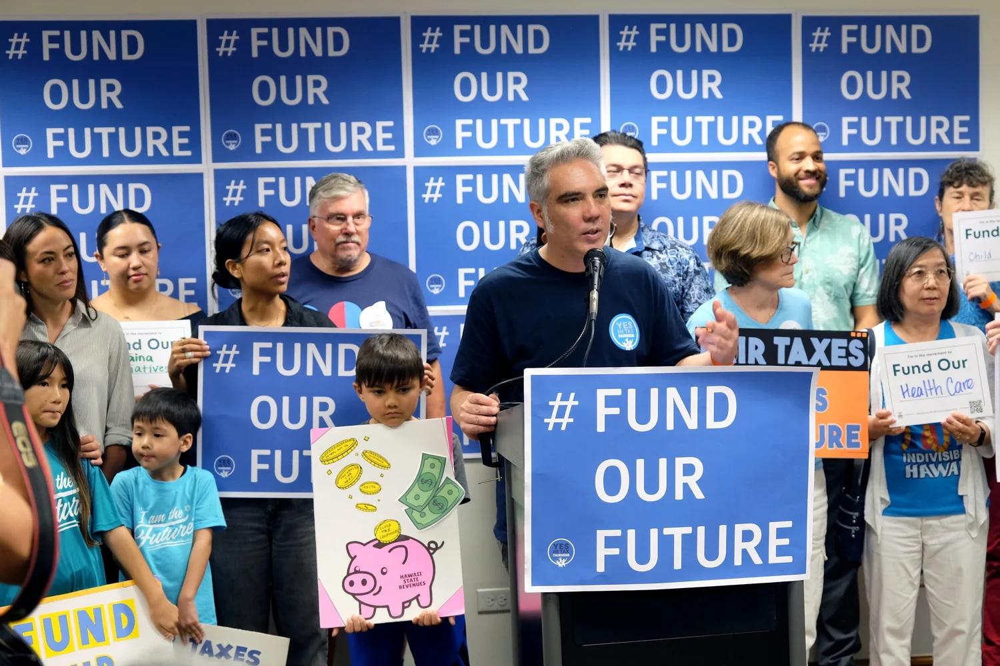
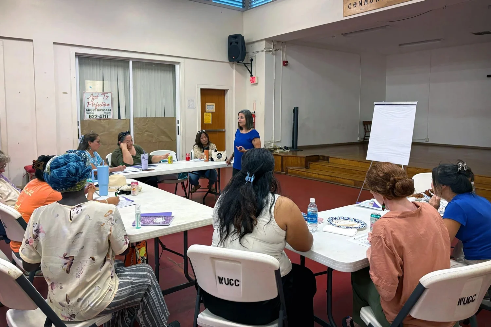

"From impact litigation as Lawyers for Equal Justice, to policy advocates and data analysts as Hawaiʻi Appleseed—our methods have changed, but our vision for a Hawaiʻi that puts its people first has remained."
2004
Founded
$1B/yr
Wage gains secured
$60M/yr
Tax relief delivered
5
Issue areas
Scroll to journey
Chapter 01
Founding and early years
2004 — 2010
2004 · Origin
A new firm, founded to fight inequality.
The organization was founded in 2004 under the name Lawyers for Equal Justice by a group of attorneys and advocates concerned about the persistent realities of poverty and inequality in Hawaiʻi. Their mission was to use legal tools to address systemic issues and ensure that low-income and marginalized communities had access to justice.
Veteran civil rights attorney Victor Geminiani led the early work, focused squarely on housing rights, public benefits, and economic security.
2004 · First Case
Stopping the state from overcharging low-income families.
LEJ's first case challenged rent overcharges in subsidized housing, fighting to ensure that public housing actually serves as a platform for economic stability. The case led to the hiring of LEJ's first employee — a part-time attorney named Gavin Thornton, who would, many years later, lead the organization as its executive director.
The case resulted in rent reductions of more than $1 million every year since it was resolved.

Hawaiʻi Appleseed's second executive director, Gavin Thornton, was also its first employee.
Photo · Will Caron
2007 — 2014 · Litigation Wins
Forcing the state to keep its promises.
Through a string of class actions, LEJ secured systemic legal victories that protected the state's most vulnerable residents:
2007–08 · Ensured homeless children in Hawaiʻi have full, meaningful access to a public education.
2008–15 · Forced long-overdue upgrades to Kuhio Park Terrace and Mayor Wright Homes after years of disrepair and squalor.
2010–14 · Preserved life-saving healthcare access for Compact of Free Association (COFA) residents.
2010–11 · Required the timely processing and delivery of SNAP benefits to beneficiaries.
Chapter 02
Expansion and renaming
2011 — 2016
2011 · Becoming Appleseed
From Lawyers for Equal Justice to Hawaiʻi Appleseed.
In 2011, the organization became the Hawaiʻi Appleseed Center for Law and Economic Justice, joining a national network of Appleseed Centers pursuing social and economic equality through research, organizing, policy advocacy, and impact litigation.
The shift recognized a hard-won truth: enforcing existing laws wasn't enough to achieve equity within a legal and policy framework that is itself inherently inequitable. Real change would require new laws, new budgets, and new public investment.
2013 — 2017 · Foster Care Lawsuit
Proof of concept: winning systemic change at the Capitol.
In 2013, Appleseed sued to force the state to raise foster care payments to account for the rising cost of living. In 2017, the Legislature took action to increase foster care rates, rendering the lawsuit moot — and cementing the proof of concept for winning systemic victories through the legislative branch rather than (or in addition to) the courts.
Hawaiʻi Appleseed clients in the foster care case.
Photo · Hawaiʻi Appleseed
2013 — 2015 · Language Access
Translation on driver's license forms — won.
An additional class action forced the state to provide language translation on driver's license forms and tests, expanding meaningful civic participation for non-English-speaking residents.
Chapter 03
Broadening impact and advocacy
2017 — 2022
Tax Justice
2017 · EITC Established
A state Earned Income Tax Credit, at last.
Hawaiʻi Appleseed's research and coalition advocacy delivered the state's first Earned Income Tax Credit, putting $20 million in tax relief back into the pockets of Hawaiʻi's working families every year.
2018 · Capacity Built
Joining the State Priorities Partnership; founding the Hawaiʻi Budget & Policy Center.
In 2018, Appleseed joined the State Priorities Partnership — a network of policy think tanks convened by the Center on Budget and Policy Priorities — and stood up the Hawaiʻi Budget & Policy Center, headed by veteran policy expert Beth Giesting, to invest in budget-focused data and research that powers everything that comes next.
Food Equity
2019 · DA BUX Launched
Doubling the dollar at the farmers' market.
Appleseed helped establish DA BUX, a SNAP doubling program that has dramatically expanded the capacity of low-income households to eat more healthy, locally-sourced food. It has become one of the most popular government programs in the state.
Wages & Labor
2022 · $18 Minimum Wage
$1 billion in additional wages, every year.
After multiple years of advocacy, the Legislature passed a phased increase of Hawaiʻi's minimum wage from $10.10 to $18 an hour over six years — delivering an estimated $1 billion in additional wages each year to more than 200,000 of the state's low-wage workers and translating into economic growth and prosperity for the entire community.

Hawaiʻi Appleseed staff, supporters, and coalition partners sign-wave in support of raising the state minimum wage and expanding the EITC in 2022 — efforts that paid off after multiple years of advocacy.
Photo · Will CaronTax Justice
2022 · EITC Expanded
From $20M to $40M in tax relief, better targeted.
The state EITC was expanded and refined to maximize its benefits and better target them toward the truly low-income families who need help most — bringing the credit's total annual value to $40 million.
Affordable Housing
2018 — 2023 · Front Street
The Front Street apartments — a victory, then a loss.
The Front Street apartments in Lahaina were developed using millions of dollars in public funds, with the developer agreeing to preserve low-income affordability for 51 years, through 2052. In 2019, the developer tried to exit that promise decades early, threatening to push 142 mostly kūpuna households onto the street.
Appleseed sued in 2018 and won a judgment in 2020 — the developer would have to abide by the 51-year covenant. The horrible irony of that victory came in 2023, when wildfires burned Lahaina and Front Street to the ground, killing more than 100 people, displacing thousands more, and devastating the community.
A harsh reminder of the precariousness of our affordable housing supply — and the urgent need for resilient, sustainable solutions in the era of climate change.
Affordable Housing
2022 · Housing Investment
$1 billion in state funds, finally aimed at the supply.
As the housing crisis deepened, Appleseed dove into research showing that public investment in the financing of affordable housing was the missing element to actually building homes at prices low-income residents could afford. The drumbeat from Appleseed and its partners helped drive a $1 billion injection of state funds in 2022 to develop affordable housing — plus millions more for homelessness services.

(L–R) Ragnhild Lydia Nystad, formerly of the Norwegian Sámi Parliament; Dr. Davianna McGregor, of the University of Hawaiʻi at Mānoa's ethnic studies program; and Irja Seurujärvi-Kari, of the Finnish Sámi Parliament — at the 2022 Appleseed Housing Solutions Conference at UH Mānoa.
Photo · Hawaiʻi AppleseedCOVID-19 Response
2020 — 2022 · Pandemic Era
Don't cut. Invest. Stabilize.
When COVID-19 hit Hawaiʻi in March 2020, Appleseed responded with research-based policy proposals and convened on-the-ground service providers to inform the state's response. Drawing on lessons from the Great Recession, the recommendations centered on resisting austerity and instead pouring funding into programs, expanding the safety net, and getting struggling families stabilized so they could resume economic activity.
The state adopted Appleseed's proposal to create an emergency rent relief and eviction mediation program. Subsequent Appleseed research showed that this single policy saved thousands of households from homelessness during the height of the pandemic.
Chapter 04
Recent developments and current focus
2023 — Present
2023 — Present · One House
Hawaiʻi Budget & Policy Center, folded into Appleseed.
Tax and budget policy continues to be a central pillar of the organization's work — but the separate brand of the Hawaiʻi Budget & Policy Center has been folded into the Appleseed umbrella as the distinction is no longer helpful. With newly hired staff expanding the scope of advocacy in food equity, affordable housing, and — for the first time ever — transportation equity, Appleseed's work continues to shape the policy landscape.

Hawaiʻi Appleseed's third executive director, Will White, emcees a 2026 "Fund Our Future" press conference in support of fair taxes on extreme wealth — designed to generate revenue to invest in our communities and people.
Photo · Will CaronCommunity Power
Ongoing · Pilina Builders
Policy that comes from the community.
A growing aspect of the work is empowering community members to advocate for themselves. Through workshops, training programs, and organizing, Appleseed has helped build a stronger, more informed, and more engaged community — and has made an internal commitment to drive policy that comes from the community, putting people first.
Appleseed's biggest legislative wins have only come with a critical mass of community support and participation.

Director of community engagement Christy MacPherson does leadership development training with the 2025–26 cohort of the Pilina Builders — a diverse, bright, and community-grounded group of women from ʻEwa and Waipahu.
Photo · Hawaiʻi Appleseed
Looking Forward
A third decade of fighting for a more just and equitable Hawaiʻi.
As Hawaiʻi Appleseed moves into its third decade of service, the organization remains committed to its mission of advancing economic justice for and with the people of Hawaiʻi. With a focus on systemic change, community empowerment, and strategic advocacy, Hawaiʻi Appleseed continues to work toward a future where all residents have the opportunity to thrive.
From a small group of dedicated attorneys to a powerful force for social and economic justice — and with new leadership in place — Hawaiʻi Appleseed remains a beacon of hope and a tireless champion for the rights of Hawaiʻi's most vulnerable residents.